Case Study 04
AppFolio's Resident Page Redesign
A data-driven approach to reducing a user's cognitive load on AppFolio's most-visited page.
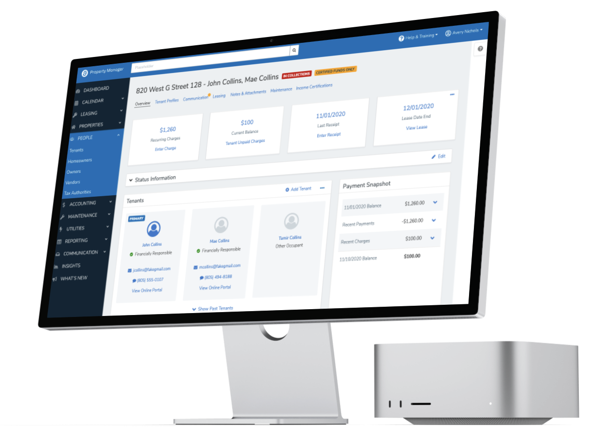
The Opportunity
When growth quietly breaks usability
"Your UX focus is on making the product better to generate more sales, but you leave the actual users behind."
During high-growth periods, companies struggle to keep a product usable as features pile up. AppFolio was watching its lagging success indicators — NPS and SUS scores — decline, and research surfaced a telling pattern: across the most-visited pages, 80% of the features were used less than 1% of the time.
Leadership's hypothesis was that ease of use could be improved by decreasing cognitive load on highly-adopted pages. The resident page — the single most-visited page in the product — was chosen as the place to test it.
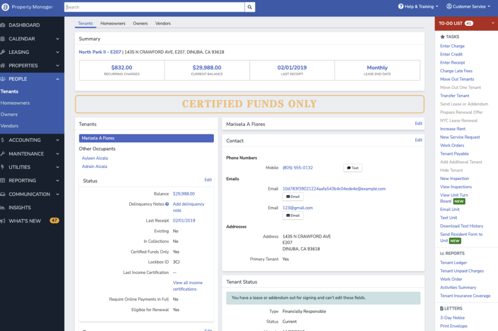
My Role
Let the data make the case
I led the research and design for the redesign — designing and running the usability studies, turning behavioral data into design constraints, and facilitating the collaborative design sessions that turned evidence into a tested, defensible direction.
What I owned
Baseline usability testing, card sorting, behavioral-data analysis, design facilitation, and the information-architecture recommendations.
Who I partnered with
Product management, engineering, subject-matter experts, and the design-system team.
How decisions were made
Behavioral usage data set content size and prominence; SMEs and stakeholders chose the direction most likely to raise ease of use.
Approach
Four phases, evidence at every step
Baseline Usability Testing
I established a baseline for common tasks on the resident page through formal usability testing with current users — measuring time on task, pass/fail rate, the single ease question (SEQ), scrolling, and how people visually inspected the page.
- 42% of users failed a common task at the top of the page.
- SEQ stayed high even when users failed — they didn't realize they had.
- For every task, ~80% of users scrolled on their first attempt — even for tasks at the top of the page.
- Failures often came from not knowing the scope of a task — a single resident vs. the entire unit.
"As you go down the page, things tend to blur a little bit and you really have to pay attention to reading each header."
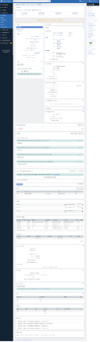
Card Sorting
I ran card sorting to inform the information architecture and learn how customers actually think about resident-level versus occupancy-level information — their terminology, and how they'd group the tasks.
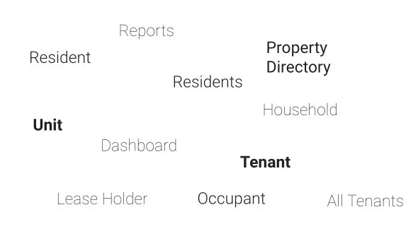
Data-Driven Design Mobbing
I pulled quantitative feature-usage data — everything above the 1% usage line — and facilitated a series of collaborative design sessions in Figma where the behavioral data dictated content size and feature prominence, built from design-system components.
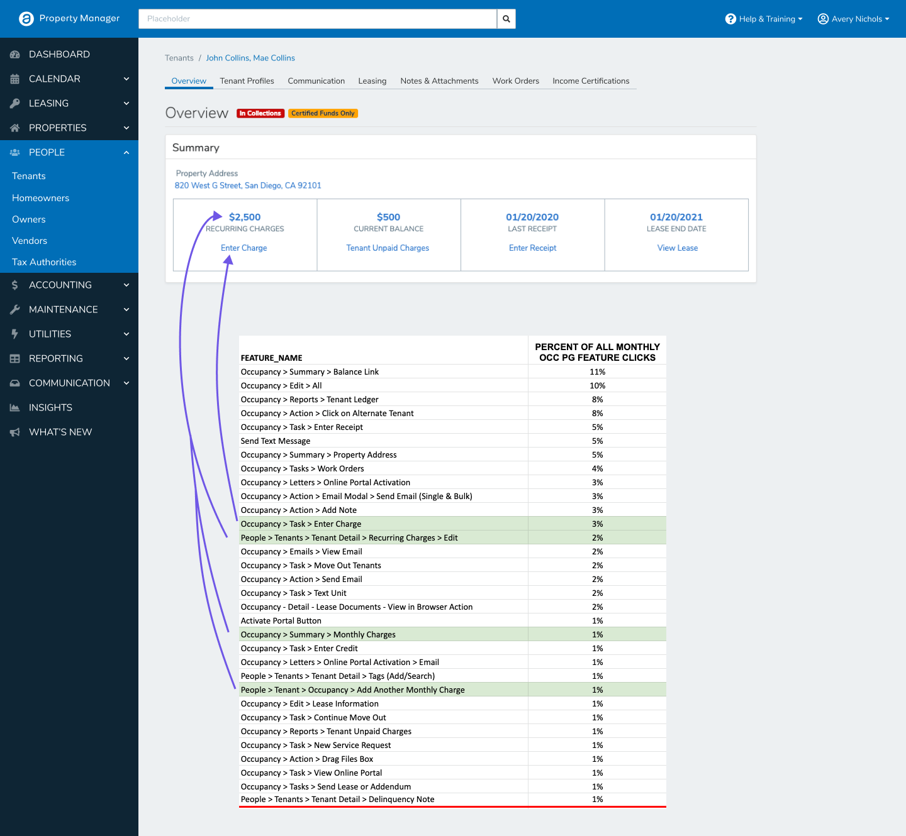
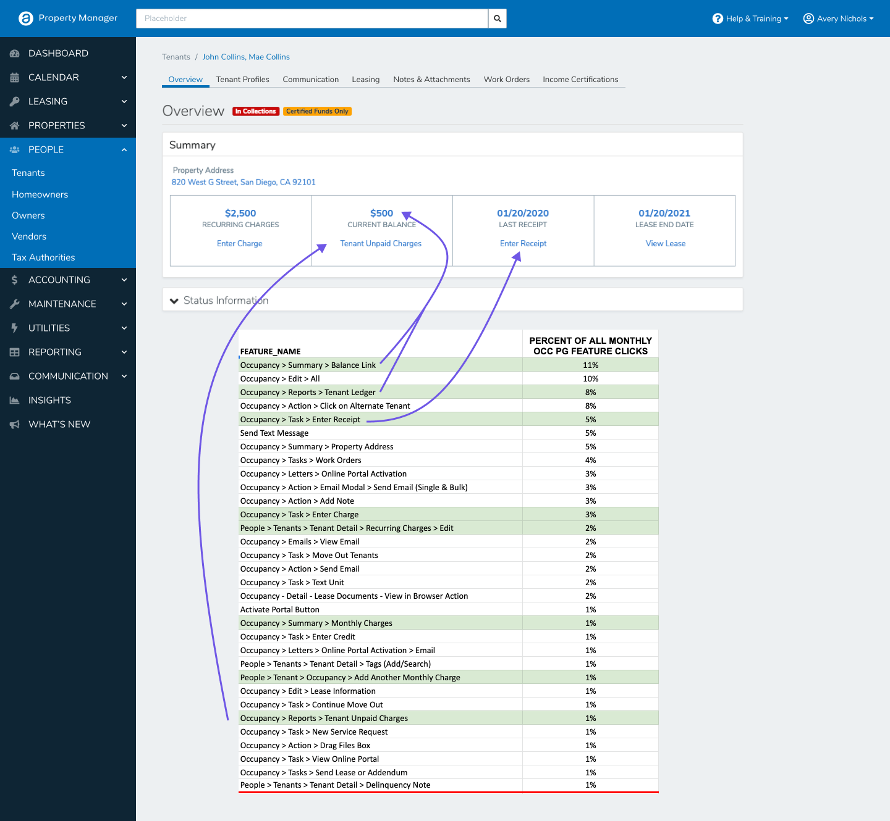
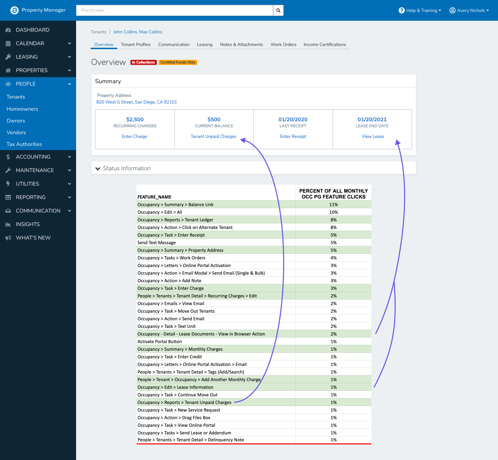
Exploring the Constraints
A second round of mobbing pressure-tested the design constraints and alternatives — navigation patterns, the contextual scope of alerts, and how to use the newly available right-side screen space. We explored three directions and, after a stakeholder presentation, selected the middle variant — the one SMEs judged most likely to raise ease of use and customer value.
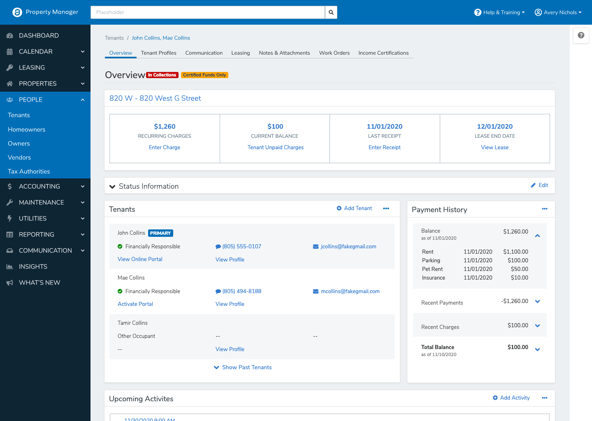
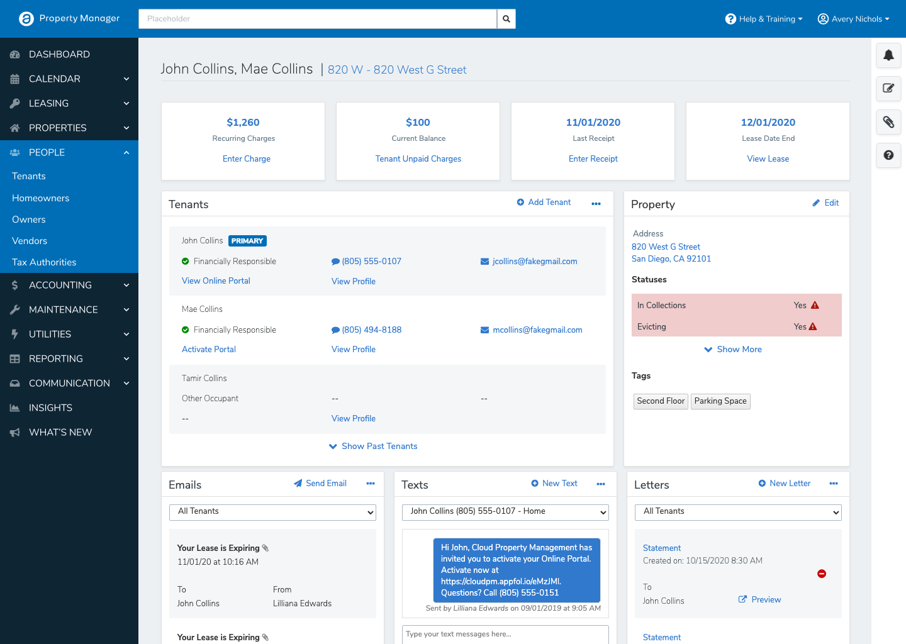
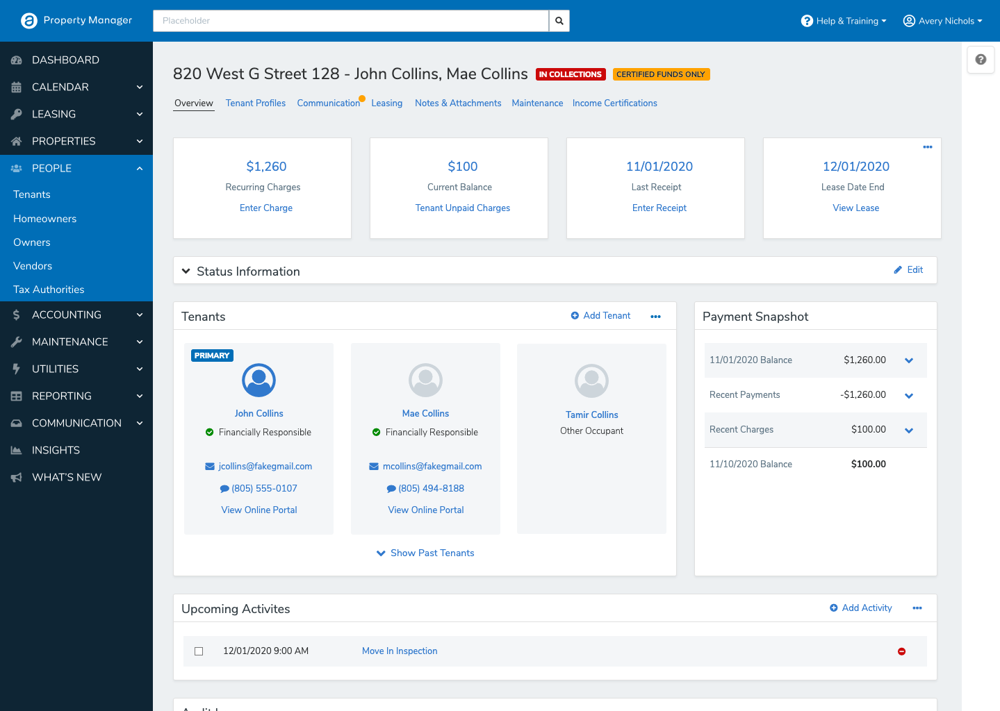
Results
The redesign, retested
We put the chosen design back through the same usability tests we ran at baseline. The same tasks, measured the same way — now against the redesign.
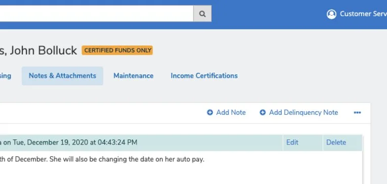
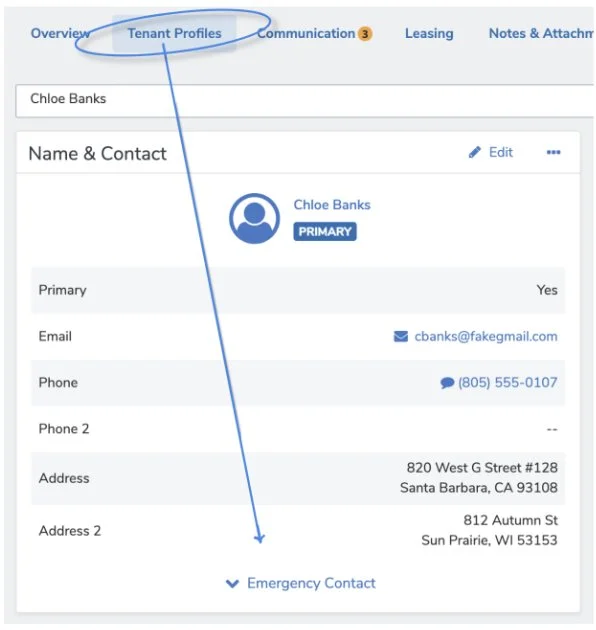
Outcomes & Impact
What this work moved
The impact reached well past the page itself. The findings reshaped how the organization prioritized work for the following year — earning substantial budget toward information architecture, a full reorganization from segment teams into platform teams, and a more holistic approach to problem-solving.
Two patterns born from the redesign — a secondary navigation layer and a contextual task dropdown — were adopted into the AppFolio design system, and are still in active use today.
The Takeaway
Cognitive load is a measurable thing
The most persuasive artifact wasn't a polished mockup — it was the usage data showing that most of the page went unused. Once "ease of use" had numbers behind it, the conversation changed: from defending pixels to prioritizing the architecture of the whole product.
That's the thread I've carried forward — design decisions earn trust fastest when they're backed by evidence, and the best research doesn't just improve a page, it changes how the team decides what to build next.